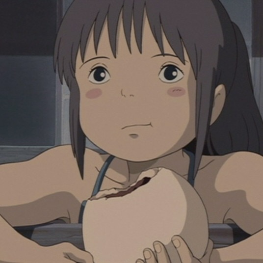

History
Founded in 1985, Studio Ghibli was started by directors Hayao Miyazaki and Isao Takahata, alongside producer Toshio Suzuki. The studio was initially founded following the success of the 1984 movie, 'Nausicaä of the Valley of the Wind'. Decades later, Studio Ghibli has produced 22 films in total, their highest-grossing films hitting $395.8M USD (Spirited Away, 2001) and $236M USD (Howl's Moving Castle, 2004). The majority of Studio Ghibli's films are headed by Miyazaki, who is arguably one of the most notable of the intitial three founders. A staple in Japanese culture, Studio Ghibli films are now enjoyed by people all across the country, with films being translated into Danish, Enlglish, German, French, Italian, Chinese, and more.

Films
Extras
Real-Life Locations

|

|

|

|
|
Yakushima Island, Japan in |
Kamikochi Imperial Hotel, Japan in |
Jiufen, Taiwan in |
Stiniva Cove, Croatia in |
Foods Seen in Studio Ghibli Films
Click on the images below to learn how to make them!
|
|
 |
|

|

|
|
Konpeito candy, a Japanese candy seen in Spirited Away (2001), comes in a variety of flavors and colors |
Anko buns, made with adzuki (red) beans, are also seen in Spirited Away (2001). Super flavorful and a great snack! |
This adorable chocolate cake was seen in Kiki's Delivery Service (1998) and is so cute to recreate! |
A warm bowl of ramen is the perfect comfort food for any day, and is featured in Ponyo (2008). |
Bento boxes are staples for lunch, and this one from Whisper of the Heart (1995) is finished off with delicious toppings! |